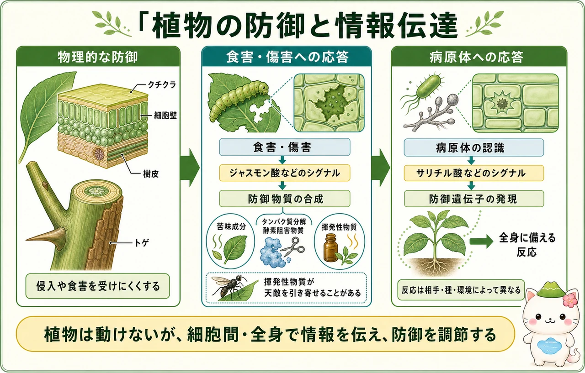

光・重力・季節を読む
植物は目や神経をもたない一方で、光、重力、接触、温度、水分、化学物質を受け取る仕組みをもちます。青色光を受けると、茎の伸長する側でオーキシンの分布が偏り、光と反対側がより伸びることで茎は光の方へ曲がります。根は重力に対して正の屈性、茎は負の屈性を示します。根冠の細胞内で重力を感じた情報が、オーキシンの分布と細胞の伸長を変えます。
季節の変化では、昼夜の長さを手がかりにする光周性が重要です。フィトクロムは赤色光と遠赤色光を受け取る色素タンパク質で、昼と夜の情報を伝えます。花芽形成では単なる「昼の長さ」より、連続した夜の長さが決め手になる植物があります。低温を一定期間経験した後に花をつくりやすくなる春化も、季節に合わせて生殖を行う仕組みです。
環境応答は一つのホルモンだけで決まりません。オーキシン、サイトカイニン、ジベレリン、アブシシン酸、エチレンなどが、器官・発生段階・環境に応じて相互に作用します。たとえば乾燥時の気孔閉鎖ではアブシシン酸が関わり、エチレンは果実の成熟や落葉の過程に関わります。
植物の防御と情報伝達
植物の防御には、最初から備わる壁と、攻撃後に強まる応答があります。クチクラ、細胞壁、樹皮、トゲなどは、病原体の侵入や食害を受けにくくする物理的な防御です。食害・傷害を受けた細胞は、ジャスモン酸などのシグナルを使って防御物質の合成を促します。苦味成分やタンパク質分解酵素阻害物質は、食べる側にとって不利に働く場合があります。
病原体を認識したときには、サリチル酸などを介して防御遺伝子の発現が高まり、離れた器官も防御の準備をすることがあります。植物が放出する揮発性物質が、食害する昆虫の天敵を引き寄せる例もあります。ただし、防御反応にはエネルギーと材料が必要で、相手の種類、植物の種、栄養状態、環境によって有効な反応は異なります。

個体群と群集
同じ種の個体が同じ場所に集まったものを個体群、複数の種の個体群が相互に関わるまとまりを群集といいます。植物どうしには、光・水・無機養分・空間をめぐる競争があります。一方、送粉者や種子散布を担う動物、菌根菌との関係のように、双方または片方に利益がある関係もあります。捕食・被食、寄生、共生、競争は、群集の構成を変える要因です。
ある種が環境へ強い影響を及ぼす場合、その種をキーストーン種と呼ぶことがあります。植物では、林冠をつくる樹種、窒素固定を行う植物、湿地を形づくる植物などが、他の生物のすみかや利用できる資源に大きく影響します。生物多様性は単に種数だけでなく、遺伝的な多様性、種の組み合わせ、環境の多様性まで含めて考えます。
遷移とバイオーム
遷移は、ある場所の群集が時間とともに変化する過程です。土壌がほとんどない火山岩や氷河跡から始まる一次遷移では、地衣類やコケ、草本などが足がかりをつくり、土壌の発達とともに植物群集が変化します。火災・伐採・洪水などの後、土壌や種子が残った場所から始まる二次遷移は、一般により速く進みます。
地域の気温と降水量は、どの植物が生育できるかに大きく影響します。気候に対応した大きな植生帯をバイオームといいます。ツンドラ、針葉樹林、温帯落葉樹林、草原、砂漠、熱帯多雨林などには、それぞれの気候に適した植物の形や生活史があります。温暖で湿潤な地域ほど純一次生産量が大きい傾向がありますが、土壌、水、攪乱、人間活動も植生を変えます。


森の変化を「昔は草地、今は森林」と一言で終わらせず、土壌は残った？ 種子は届く？ 気候や火災はどう？ と条件を分けると、遷移がぐっと生きたしくみに見えてくるよ。
この冊子の要点
- 植物は光・重力・昼夜・低温などを受け取り、ホルモンを介して成長や花芽形成を調節します。
- クチクラなどの物理的防御と、シグナルによる防御物質・防御遺伝子の応答が組み合わさります。
- 植物は群集の生産者であり、競争・共生・生息場所の形成を通じて他の生物に影響します。
- 遷移とバイオームは、時間の変化と気候の違いから植生を理解する枠組みです。